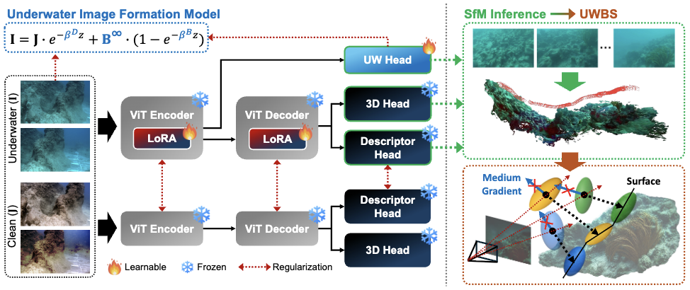
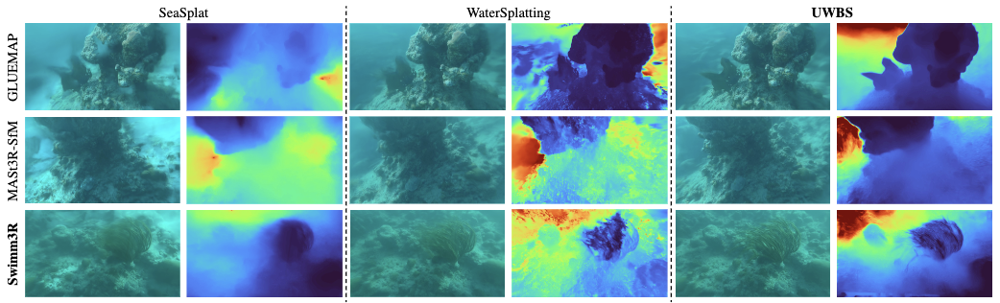
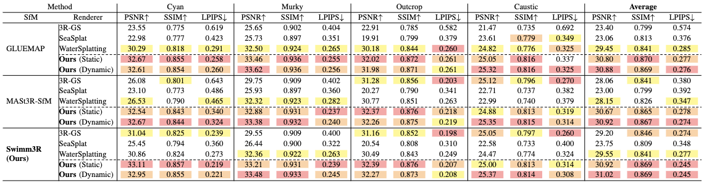
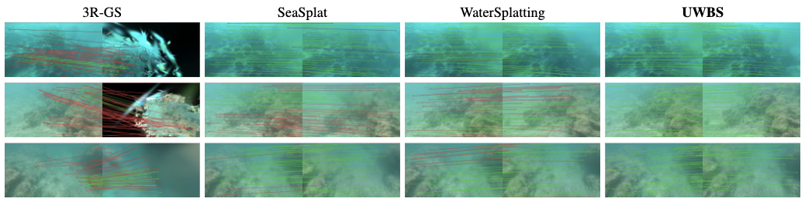

Swimm3R: Splatting with Medium-aware SfMfor Underwater 3D Reconstruction
Interactive SfM Result
Compare underwater point clouds reconstructed by COLMAP, GLUEMAP, MASt3R-SfM, and Swimm3R across the four Barbados scenes. Drag to rotate, scroll to zoom.
Abstract
We propose Swimm3R, a unified framework that combines medium-aware structure-from-motion (SfM) with Underwater Beta Splatting to address scattering- and attenuation-induced failures in underwater 3D reconstruction. Swimm3R distills in-air geometric priors into a feed-forward backbone and uses a physics head to regress underwater image-formation parameters, camera poses, and restored point clouds. Additionally, we introduce Underwater Beta Splatting, which extends Gaussian splatting with Beta primitives and scattering-aware geometric gradients for stable underwater geometry representation. We further establish the Barbados underwater video dataset to demonstrate the effectiveness of our method in challenging underwater environments. On this dataset, Swimm3R robustly recovers underwater scene structure under challenging scattering conditions, yielding coherent seafloor geometry. Using these predicted point clouds, the proposed Underwater Beta Splatting improves average PSNR by 1.47 dB over WaterSplatting while increasing downstream localization performance by 2.0 and 2.4 percentage points in RRA@15 and RTA@15, respectively.
Swimm3R

Performance Comparison



BibTeX
@article{kweon2026swimm3r,
title = {Swimm3R: Splatting with Medium-aware SfM for Underwater 3D Reconstruction},
author = {Kweon, Minseong and Sattar, Junaed},
journal = {arXiv preprint arXiv:XXXX.XXXXX},
year = {2026}
}